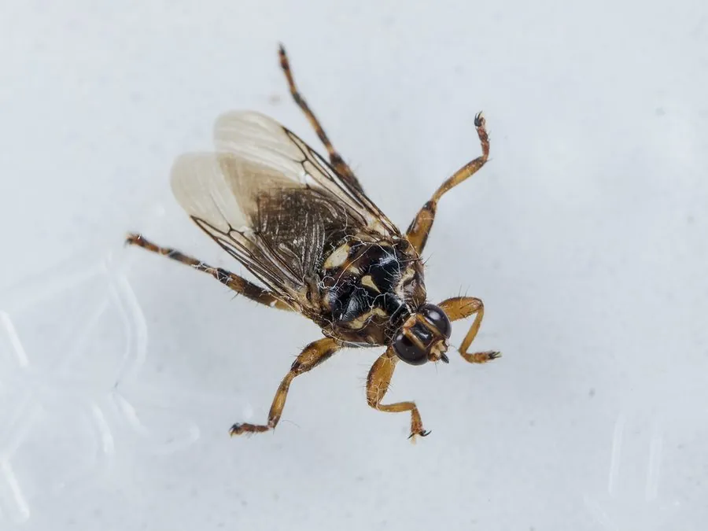

昆虫 · 动物界
虱蝇 Hippobosca equina

外形像小蜘蛛的吸血蝇，翅膀宽大而平，常贴在马、牛等家畜身上吸血，雌蝇直接产下已经发育成熟的幼虫。
- 分类
- 门节肢动物门纲昆虫纲目双翅目科虱蝇科属虱蝇属
- 栖息环境
- 马厩、牧场和畜舍，成虫寄生在马、牛等家畜体表
- 地理分布
- 欧洲、非洲和亚洲的养马地区，中国北方牧区有分布
- 保护级别
- 暂无评估
物种志
虱蝇成虫体长 7–10 mm，体扁平，腿粗壮，外形像一只小蜘蛛；翅宽大且平放在背上，口器为刺吸式，适合刺穿皮肤吸血。它的体表坚韧，不容易被家畜甩掉。
虱蝇分布于欧洲、非洲和亚洲的养马地区。成虫栖息在马、牛等家畜的体表，以吸血为生，也常停在墙壁、围栏和树干上。它有很强的宿主定位能力，飞行迅速，能主动追着宿主移动。雌蝇一次只产一头成熟的幼虫，幼虫落地后立即化蛹。虱蝇叮咬会使家畜烦躁、影响休息和生长，也可能传播某些病原体。防治上主要依靠清理畜舍、给家畜刷洗和定期检查体表。目前它没有IUCN 的正式评估，中国未将其列入国家重点保护野生动物名录。
形态与习性
- 食性成虫吸血，寄生于马、牛等家畜体表
- 体长7–10 mm
- 生活史雌蝇直接产下成熟幼虫，每胎 1 头，落地即化蛹
- 宿主马、牛等大型家畜
- 危害叮咬使家畜烦躁，影响休息和生长
- 防治清理畜舍、刷洗家畜、定期检查体表
趣味知识
- 虱蝇的腿粗壮、身体扁平，外形像一只小蜘蛛。
- 它喜欢停在家畜的背部和腹侧吸血，被叮咬的动物会烦躁不安。
- 雌虱蝇不产卵，而是直接产下成熟幼虫，落地即化蛹。